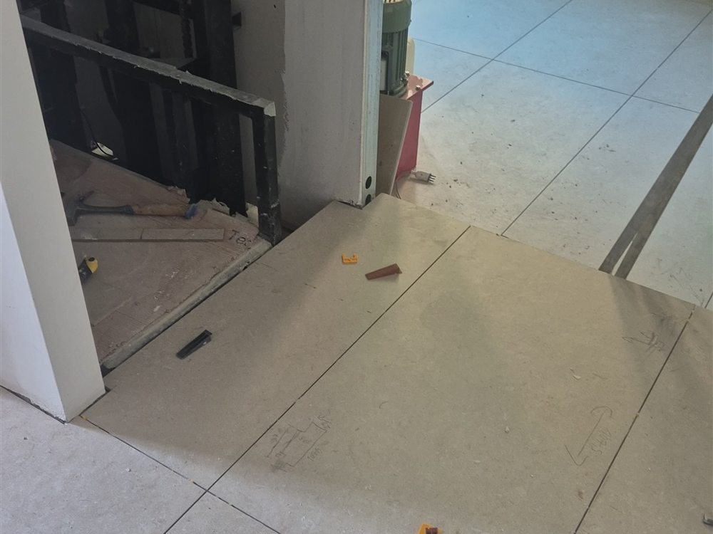

Quanto Costa Ristrutturare Casa a L'Aquila nel 2026
Prezzi al metro quadro, esempi per taglio di appartamento e i fattori che fanno davvero la differenza sul preventivo: la guida completa ai costi di ristrutturazione nel territorio aquilano.
Leggi l'articolo